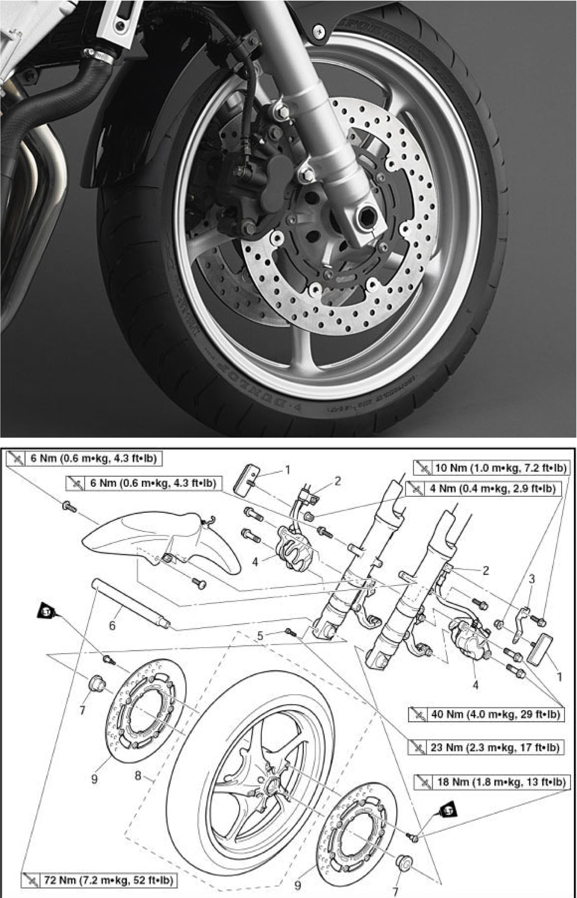

Hk 6 Mm (0.6 m*kgt 4.3 ÍMb} - — — - - — - .. -- , f ÍXJlO Nm (1-0 m-kg, IJt tt-3-b;i |X| 4 Nm (0.4 lff*Kg, 2.9 Tt*H>) | ,' [XI 6 Nm (0.6 m-kg. 4.3 ft-lb} '' íTJ 40 Hm {4,0 nvkq. 23 ft.|b)1 Xl ^3 Nm (2.3 m-kg, 17 ft-lb) XI 16 Mm m‘KS- 1 3 XI 72 Mm {7.2 fn»kg. 53 fl-lfr) Név OCSKÓ GYULA Tárgy: Rajzszám: SZAKRAJZ YAMAHA FZ-S ELSŐ KERÉKAGY Méretarány: Ml :1 Anyag: Összeállítási rajz Fájlnév: SZAKRAJZ
